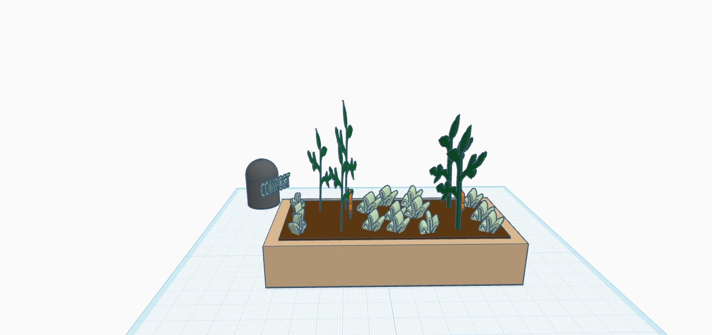
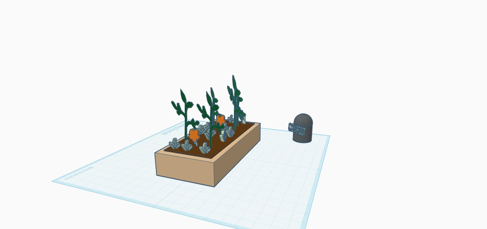
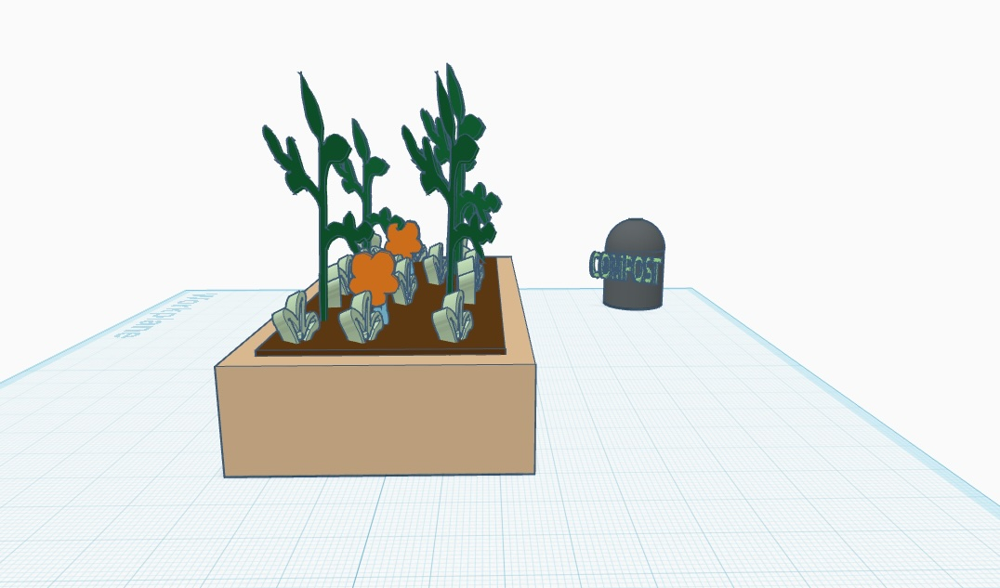
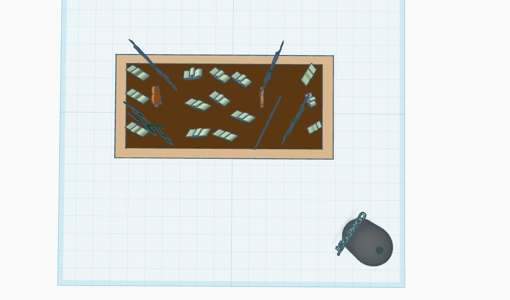

3D
Raised Garden bed Model








For my design I created a 3D model of my backyard garden. I am in the process of building a raised garden bed and thought it would be useful to map out how to build the structure and plan for seed spacing. To make the raised bed I chose a rectangular form imitating the pieces of wood I have at home and within, a smaller rectangular hole represents the soil. I drew shapes to make different seedlings and flowers, playing around with planting distance to see how I could fit crops in. I also created an area for compost by union grouping shapes to form a bin and added text as a label. This model will be used as a blueprint for my construction, saved as an image.
_____Modeled in Tinkercad_____